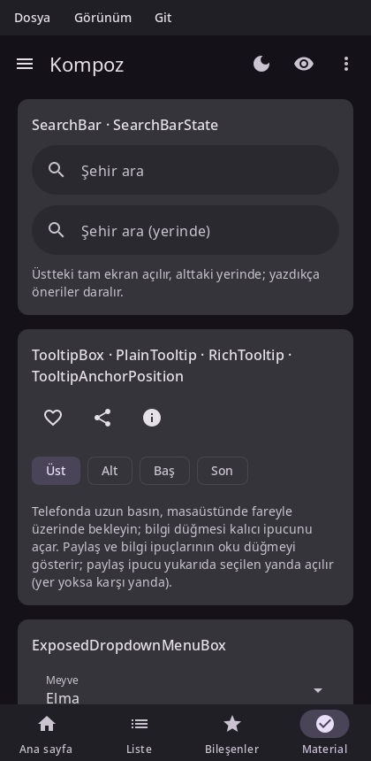

Material components
Kompoz implements Material 3 as Compose Material 3 1.4 does, Expressive components included: the same components, the same measurements and the same defaults. This page is a tour of the main ones; the API page lists them all with their status.

Material components read their colors, type and motion from MaterialTheme, so wrap your app in one. See Theming.
Scaffold and app bars
Scaffold lays out a screen: a top bar, a bottom bar, a floating action button and a snackbar host around the content. The content gets the padding that keeps it clear of the bars and the system's insets.
void Inbox() {
auto snackbars = rememberSnackbarHostState();
Scaffold(Modifier(),
{.topBar = [] { TopAppBar({.title = [] { Text("Inbox"); },
.navigationIcon = [] { IconButton([] {}, [] { Icon(Icons::Filled::Menu, "Menu"); }); },
.actions = [] { IconButton([] {}, [] { Icon(Icons::Filled::Search, "Search"); }); }}); },
.floatingActionButton = [snackbars] {
FloatingActionButton([snackbars] { snackbars.showSnackbar("Draft saved"); }, [] { Icon(Icons::Filled::Edit, "Compose"); });
},
.snackbarHost = [snackbars] { SnackbarHost(snackbars); }},
[](PaddingValues padding) {
LazyColumn(Modifier().fillMaxSize(), {.contentPadding = padding}, [](LazyListScope& l) {
l.items(30, [](int i) { ListItem({.headline = [i] { Text("Message " + std::to_string(i)); }}); });
});
});
}Top app bars come in the sizes Material defines: TopAppBar, CenterAlignedTopAppBar, MediumTopAppBar and LargeTopAppBar. With a scroll behavior (TopAppBarDefaults::enterAlwaysScrollBehavior(), exitUntilCollapsedScrollBehavior(), pinnedScrollBehavior()) and the behavior's nestedScrollConnection on the Scaffold, they collapse and change color as the content scrolls (see Lists and grids). BottomAppBar and BottomSheetScaffold exist too.
Navigation
| Component | Use |
|---|---|
NavigationBar + NavigationBarItem | Three to five destinations at the bottom of a phone screen. |
ShortNavigationBar | M3 Expressive's shorter bar. |
NavigationRail, WideNavigationRail | Destinations at the side of a wider window. |
ModalNavigationDrawer, DismissibleNavigationDrawer, PermanentNavigationDrawer | A drawer of destinations. |
NavigationSuiteScaffold | Picks a bar, a rail or a drawer by the window's size. |
PrimaryTabRow, SecondaryTabRow, PrimaryScrollableTabRow + Tab | Tabs. |
NavigationSuiteScaffold is usually the one you want: it shows a bar on a phone and a rail on a tablet or desktop window, as Compose's adaptive navigation suite does.
void App() {
auto tab = rememberSaveable([] { return mutableStateOf(0); });
NavigationSuiteScaffold([&](NavigationSuiteScope& nav) {
nav.item(tab.get() == 0, [tab] { tab.set(0); }, Icons::Filled::Home, "Home");
nav.item(tab.get() == 1, [tab] { tab.set(1); }, Icons::Filled::Search, "Search");
nav.item(tab.get() == 2, [tab] { tab.set(2); }, Icons::Filled::Settings, "Settings");
}, Modifier(), {}, [&] {
Text("Tab " + std::to_string(tab.get()));
});
}For moving between screens with a back stack, see Navigation.
Buttons
| Component | Emphasis |
|---|---|
Button | Filled: the main action. |
FilledTonalButton | Tonal: an important action that isn't the main one. |
ElevatedButton, OutlinedButton | Medium emphasis. |
TextButton | Low emphasis, in dialogs and cards. |
IconButton, FilledIconButton, OutlinedIconButton, IconToggleButton… | An icon on its own. |
FloatingActionButton, SmallFloatingActionButton, LargeFloatingActionButton, ExtendedFloatingActionButton | The screen's primary action. |
SingleChoiceSegmentedButtonRow + SegmentedButton | A choice among a few options. |
ButtonGroup, SplitButtonLayout, ToggleButton | M3 Expressive's groups, split buttons and toggles. |
Row(Modifier(), {.horizontalArrangement = Arrangement::spacedBy(8)}, [&] {
Button([] {}, [] { Text("Save"); });
OutlinedButton([] {}, [] { Text("Cancel"); });
IconButton([] {}, [] { Icon(Icons::Filled::Favorite, "Like"); });
});Cards and lists
Card, ElevatedCard and OutlinedCard group related content; each also comes in a clickable form that takes onClick first. ListItem is a one-, two- or three-line row with optional leading and trailing content:
OutlinedCard(Modifier().fillMaxWidth(), [&] {
ListItem({.headline = [] { Text("Wi-Fi"); },
.supporting = [] { Text("Connected"); },
.leading = [] { Icon(Icons::Filled::Settings, ""); },
.trailing = [] { Switch(true, [](bool) {}); }});
});Selection controls
Checkbox, TriStateCheckbox, RadioButton, Switch, Slider and RangeSlider. They are stateless: they show the value you pass and report changes through a callback.
void Volume() {
auto volume = remember([] { return mutableStateOf(0.5f); });
auto muted = remember([] { return mutableStateOf(false); });
Column([&] {
Slider(volume.get(), [volume](float v) { volume.set(v); });
Row(Modifier().toggleable(muted.get(), [muted](bool v) { muted.set(v); }, SemanticsRole::Checkbox),
{.verticalAlignment = Alignment::CenterVertically}, [&] {
Checkbox(muted.get(), {}); // the whole row toggles it
Text("Mute");
});
});
}Pass an empty callback to a control inside a row that handles the click itself, as above, so that the row is one touch target and one item for accessibility.
Chips
AssistChip, FilterChip, InputChip and SuggestionChip:
FilterChip(selected.get(), [selected] { selected.set(!selected.get()); }, [] { Text("Unread"); });Text fields
TextField and OutlinedTextField, with labels, placeholders, icons, prefixes, suffixes, supporting text and errors; SearchBar and DockedSearchBar for search. See Text.
Dialogs, sheets and menus
These show above the rest of the UI. Each is composed where you call it, so it keeps its state and composition locals, and Kompoz places it on top. Show one by calling it while a state says so:
void DeleteButton(std::function<void()> onDelete) {
auto open = remember([] { return mutableStateOf(false); });
TextButton([open] { open.set(true); }, [] { Text("Delete"); });
if (open.get()) {
AlertDialog([open] { open.set(false); },
{.confirmButton = [open, onDelete] { TextButton([open, onDelete] { open.set(false); onDelete(); }, [] { Text("Delete"); }); },
.dismissButton = [open] { TextButton([open] { open.set(false); }, [] { Text("Cancel"); }); },
.title = [] { Text("Delete this message?"); },
.text = [] { Text("It will be gone for good."); }});
}
}| Component | Use |
|---|---|
AlertDialog, BasicAlertDialog, Dialog | Asks for a decision. |
ModalBottomSheet | Content that slides up from the bottom, dismissed by dragging it down. |
DropdownMenu + DropdownMenuItem | A menu anchored to what opened it. |
ExposedDropdownMenuBox | A text field with a menu of choices. |
DatePicker, DateRangePicker, TimePicker, TimeInput | Dates and times, alone or in DatePickerDialog / TimePickerDialog. |
TooltipBox + PlainTooltip / RichTooltip | A hint on long press or hover. |
Snackbars
A SnackbarHost shows the messages of a SnackbarHostState. Show one from a callback with showSnackbar, or wait for how it went in a coroutine:
auto snackbars = rememberSnackbarHostState();
auto scope = rememberCoroutineScope();
Button([scope, snackbars, undo] {
scope.launch([snackbars, undo]() -> Task {
if (co_await snackbars.showSnackbarAsync("Message deleted", "Undo") == SnackbarResult::ActionPerformed) undo();
});
}, [] { Text("Delete"); });
SnackbarHost(snackbars);Progress
CircularProgressIndicator and LinearProgressIndicator, with a progress value or without one (indeterminate); M3 Expressive's LoadingIndicator, ContainedLoadingIndicator and the wavy indicators. Indeterminate indicators animate in the draw phase, so they don't recompose anything.
CircularProgressIndicator(); // indeterminate
LinearProgressIndicator(progress); // 40 %Other components
Badges (BadgedBox, Badge), dividers (HorizontalDivider, VerticalDivider), carousels (see Lists and grids), pull to refresh, swipe to dismiss (SwipeToDismissBox), floating toolbars, and more. The API page has the complete list.
See also
- Theming: colors, typography and dark theme.
- Navigation: screens and the back stack.
- Text: text fields in depth.